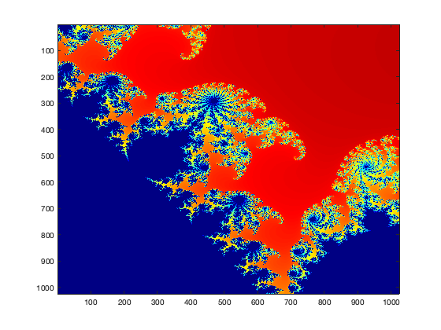
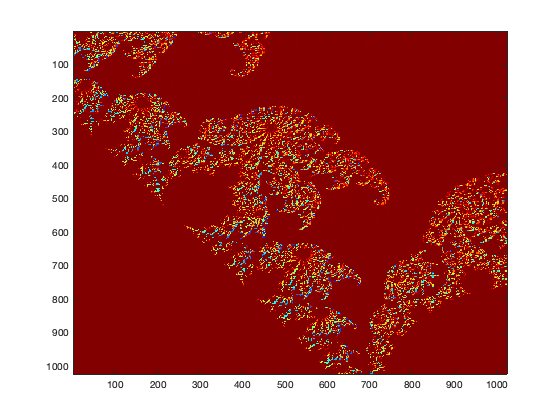

Mandelbrot model using 18bit fixed integer
Goal is to move logic to Basys3 FPGA board
Contents
set model parameters
T = mandel_type('fixed'); %centre = -0.7700+ 0.1300i; centre = 0.3245046418497685 + 0.04855101129280834i; width = 1.0 / 10 ^ 2 %width = 0.4 / 10 ^ -1; grid = 1024; iter = 255;
width =
0.0100
build mex
buildInstrumentedMex mandel_fi ... -args {centre,width,grid,iter,T } -histogram
run mex
[z, c, z0] = mandel_fi_mex(centre,width,grid,iter,T);
test model - debug
%[z, c, z0] = mandel_fi(centre,width,grid,iter,T);
calc expected
[z_exp, c_exp, z0_exp] = mandel(centre,width,grid,iter);
final model
colormap(flipud(jet(iter))); image(c);
final expected
colormap(flipud(jet(iter))); image(c_exp);
difference model vs expected
image (c-c_exp)
test model
showInstrumentationResults mandel_fi_mex ... -proposeFL -defaultDT numerictype(1,23, 20)
get error
absError = abs(c-c_exp); relError = max(absError(:) ./ abs(c_exp(:)))
relError = uint16 8